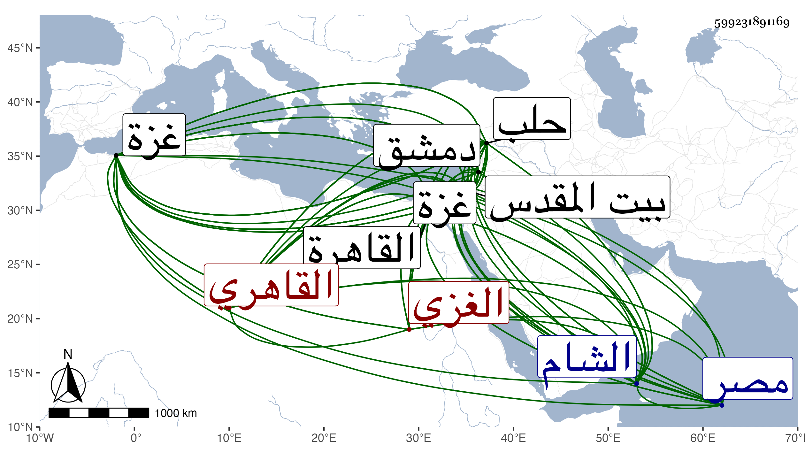

0902Sakhawi.DawLamic.ITO20230111-ara1.EIS1600.599231891169
Biography ID: 599231891169
710
محمد الشمس أبو عبد الله وقديما أبو الجود الغزي ثم القاهري بن المغربي أخو الذي قبله والماضي أبوهما . ولد في شوال سنة ثلاثين وثمانمائة بغزة وكان أبوه مالكيا فنشأ ابنه هذا متحنفا وحفظ القدوري ومنظومة ابن وهبان وغيرهما وأخذ الفقه والفرائض والحساب والعربية عن زوج أخته الشمس بن دمرداش الخطيب الحصري بل زعم أنه قرأ في بيت المقدس قطعة من شرح النزهة في الحساب لابن الهائم في سنة ثلاث وأربعين على العماد بن شرف وكذا أخذ الفقه والعربية أيضا مع الأصول عن شيخ المذهب ببلده ناصر الدين الإياسي ولازمه في قراءة الصحيحين والموطأ والشفا وغيرها ولم ينفك عنه حتى مات بحيث كان جل انتفاعه به ، ورأيت من كتب عنه أبياتا زعم أنها من نظم شيخه الإياسي والفقه وأصله أيضا عن قاضي بلده الشمس بن عمر وكتب له التوقيع وتخرج به فيه وتكسب به والعروض في حلب عن الزين قاسم الرملي ثم الحلبي أحد أصحاب ابن رسلان وبرع في العربية والفقه وكثر استحضاره لفروعه وكذا برع في الشروط وكتب بخطه جملة ، وحج بعد الخمسين وزار بيت المقدس غير مرة ودخل الشام وحلب وغيرهما أظنه في التجارة ومع ذلك فلا أستبعد أخذه فيها عن بعض فضلائها ثم بلغني عنه أنه اجتمع بدمشق في سنة أربع وخمسين بالجمال الباعوني وأخيه البرهان الشافعيين ويوسف الرومي وعيسى البغدادي الحنفيين وأخذ عنهم وتردد في حلب إلى الشمس بن الشماع والعلاء الحاضري والشمس الغزولي واستفاد منهم وإنه لقي في بيت المقدس العز عبد السلام القدسي وماهرا والجمال بن جماعة والتقي القلقشندي وعبد المؤمن الواعظ وغيرهم واستقر في مشيخة البردبكية ببلده ، وارتحل إلى القاهرة مرارا وحضر دروس العز عبد السلام البغدادي وابن الهمام والشمني والكافياجي والعضد الصيرامي وسيف الدين الحنفيين ولازم فيها الزين قاسما في الفقه وأصوله وغيرهما وحضر موته وكذا لازم الأمين الأقصرائي وأذنا له والصيرامي ومن قبلهم الإياسي في الإفتاء والإقراء ، وقطن القاهرة من سنة ثمان وسبعين وقصدني غير مرة وكذا لازم الشمس الأمشاطي في دروسه وغيرها وكساه حين أعلمه أخوه المظفر بمزيد فقره لظنه صدقه مما بان خلافه جوخة فلما ولي القضاء نوه به ونزله في صوفية البرقوقية ورتب له لتوهم فقره معلوما وصار يحيل في الفتاوى عليه .ودرس بالأزهر لسكناه بجواره ولذا كان يحضر به درس الزين عبد الرحمن السنتاوي في العربية وكذا درس في غيره ثم استقر بعد موته في تدريس السودونية ثم القجماسية المستجدة أول ما فتحت ثم قضاء الحنفية بالديار المصرية ، وسكن الصالحية وانفصل عن القجماسية ولم تحمد سيرته بل ألصق به ما يستهجن ذكره وطلب لرأس نوبة غير مرة فأهين وشوفه بمكروه كبير بل أهين بمجلس السلطان وصار الفقهاء به عند الأتراك مثلة وقيل فيه :
| يا حسرة وافت ويا ذلة | لمصر بعد العز والمرتقى |
| قد قهقرت لما ولي قاضيا | الألكن الغزي يا ذا الشقا |
وكذا قيل :
| أبكيت يا مصر جميع البلاد وضاقت الأرض بها والفضا | |
| وقام نعيا لك في كلها | لما ولي ابن المغربي القضا |
وبالجملة فلم يجد خصما يكافئه ولذا توقف الأمر وتزايد الابتلاء به خصوصا وعمل نقيبه بعض الأحداث ممن لعله اتفق معه في المقاسمة وتزايدت بذلك أمواله ، كل هذا مع عقد لسانه الموازي للخرس وفقد البهاء الذي لا يخفى ولا على أكمه في مزيد الغلس ومزيد شحه حتى على عياله وتبديد أمانته له لزيادة أمواله ، وقد تزوج في أثناء ولايته بكرا فحكت هي وأهلها من ذلك ما يفوق الوصف ولا أرى له ذكرا ولسان حال أخصامه يقول : أشبعناك سبا وفزت بالإبل على إنه تام الخبرة بالأحكام كثير الاستحضار لفروع المذهب جيد الكتابة على الفتاوى من بيت معروف بالخير في غزة وما قيل مما شوفه به أنه اتفق له فيها فباطل ، ولا زال يجاهد ويكابد ويجمع ويدفع إلى أن كان عزله على أسوأ حال بعد استصفاء ما زعم أنه آخر ما معه بحيث نزل عن السودونية لبعض نوابه وسكن الأبوبكرية وتردد إليه بعض الطلبة والمستفتين ولم يتفق في عصرنا لقاض ما اتفق له إلا إن كان السفطي ، وقد بسطت شأنه في القضاة .
